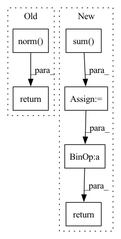

Pattern ID :10254
Before Change
real_loss = F.cross_entropy(real_y, real_label) // mean loss
fake_loss = F.cross_entropy(fake_y, fake_label) // mean loss
loss = (real_loss + fake_loss) / 2 + self.l2_reg_lambda * (self.W_O.weight.norm() + self.W_O.bias.norm())
return loss
After Change
pred = torch.cat([real_y, fake_y], dim=0) // bs*2
target = torch.cat([real_label, fake_label],dim=0) // bs
acc = torch.sum( (pred.argmax(dim=-1) == target)) .item()
acc = acc / pred.size()[0]
return loss, acc
def init_params(self):
r used for truncated_normal inti paramsIn pattern: SUPERPATTERN
Frequency: 6
Non-data size: 6
Instances Fragment ID: 36132836
Project Name: rucaibox/textbox
Commit Name: 9b5a6ec4e4a248b42892f4a8b7efc8a9a25630f7
Time: 2020-12-14
Author: 1318829605@qq.com
File Name: textbox/module/Discriminator/LeakGANDiscriminator.py
M Class Name: LeakGANDiscriminator
N Class Name: LeakGANDiscriminator
M Method Name: calculate_loss(3)
N Method Name: calculate_loss(3)
M Parent Class: UnconditionalGenerator
N Parent Class: UnconditionalGenerator
M File Name: textbox/module/Discriminator/LeakGANDiscriminator.py
N File Name: textbox/module/Discriminator/LeakGANDiscriminator.py
M Start Line: 84
M End Line: 93
N Start Line: 86
N End Line: 101
Before Change
real_loss = F.cross_entropy(real_y, real_label) // mean loss
fake_loss = F.cross_entropy(fake_y, fake_label) // mean loss
loss = (real_loss + fake_loss) / 2 + self.l2_reg_lambda * (self.W_O.weight.norm() + self.W_O.bias.norm())
return loss
After Change
pred = torch.cat([real_y, fake_y], dim=0) // bs*2
target = torch.cat([real_label, fake_label],dim=0) // bs
acc = torch.sum( (pred.argmax(dim=-1) == target)) .item()
acc = acc / pred.size()[0]
return loss, acc
def init_params(self):
r used for truncated_normal inti params Fragment ID: 36132848
Project Name: rucaibox/textbox
Commit Name: f78c75cd5c890e60a063e95617768f9402a1d553
Time: 2020-12-14
Author: 1318829605@qq.com
File Name: textbox/module/Discriminator/LeakGANDiscriminator.py
M Class Name: LeakGANDiscriminator
N Class Name: LeakGANDiscriminator
M Method Name: calculate_loss(3)
N Method Name: calculate_loss(3)
M Parent Class: UnconditionalGenerator
N Parent Class: UnconditionalGenerator
M File Name: textbox/module/Discriminator/LeakGANDiscriminator.py
N File Name: textbox/module/Discriminator/LeakGANDiscriminator.py
M Start Line: 84
M End Line: 93
N Start Line: 86
N End Line: 101
Before Change
y = view_func(y)
x_norm = x.norm(dim=1).add_(eps)
y_norm = y.norm(dim=1) .add_(eps)
dot = (x * y).sum(dim=1)
return dot.abs() / x_norm / y_norm
def _projection(self, p, grad, perturb, delta, wd_ratio, eps):
wd = 1After Change
x = view_func(x)
y = view_func(y)
return F.cosine_similarity(x, y, dim=1, eps=eps).abs_()
def _projection(self, p, grad, perturb, delta, wd_ratio, eps):
wd = 1 Fragment ID: 36132847
Project Name: clovaai/adamp
Commit Name: c8b7d03dec23393b3b701f3e445782dbea2c4455
Time: 2020-08-27
Author: bh.heo@navercorp.com
File Name: adamp/adamp.py
M Class Name: AdamP
N Class Name: AdamP
M Method Name: _cosine_similarity(5)
N Method Name: _cosine_similarity(5)
M Parent Class: Optimizer
N Parent Class: Optimizer
M File Name: adamp/adamp.py
N File Name: adamp/adamp.py
M Start Line: 26
M End Line: 33
N Start Line: 27
N End Line: 30
Before Change
def graft(ctx: Context, magnitude: jnp.ndarray, direction: jnp.ndarray) -> jnp.ndarray:
return (jnp.linalg.norm( magnitude) / clip_norm(direction, ctx.optimizer.epsilon)) * direction
def get_current_lr(ctx: Context, step: jnp.ndarray) -> jnp.ndarray:After Change
def graft(magnitude: jnp.ndarray, direction: jnp.ndarray) -> jnp.ndarray:
scale = jnp.sqrt(jnp.square(magnitude).sum() / jnp.maximum(jnp.square(direction).sum() , 1e-16))
return scale * direction
def get_current_lr(ctx: Context, step: jnp.ndarray) -> jnp.ndarray: Fragment ID: 36132845
Project Name: homebrewnlp/homebrewnlp-jax
Commit Name: b715e06b25a9700be660ca4d4fc6670b2b73dd65
Time: 2022-05-17
Author: 39779310+ClashLuke@users.noreply.github.com
File Name: src/optimizer.py
M Class Name: AnonimousClass
N Class Name: AnonimousClass
M Method Name: graft(2)
N Method Name: graft(3)
M Parent Class:
N Parent Class:
M File Name: src/optimizer.py
N File Name: src/optimizer.py
M Start Line: 100
M End Line: 101
N Start Line: 104
N End Line: 105
Before Change
y = view_func(y)
x_norm = x.norm(dim=1).add_(eps)
y_norm = y.norm(dim=1) .add_(eps)
dot = (x * y).sum(dim=1)
return dot.abs() / x_norm / y_norm
def _projection(self, p, grad, perturb, delta, wd_ratio, eps):
wd = 1After Change
x = view_func(x)
y = view_func(y)
return F.cosine_similarity(x, y, dim=1, eps=eps).abs_()
def _projection(self, p, grad, perturb, delta, wd_ratio, eps):
wd = 1 Fragment ID: 36132828
Project Name: clovaai/adamp
Commit Name: c8b7d03dec23393b3b701f3e445782dbea2c4455
Time: 2020-08-27
Author: bh.heo@navercorp.com
File Name: adamp/sgdp.py
M Class Name: SGDP
N Class Name: SGDP
M Method Name: _cosine_similarity(5)
N Method Name: _cosine_similarity(5)
M Parent Class: Optimizer
N Parent Class: Optimizer
M File Name: adamp/sgdp.py
N File Name: adamp/sgdp.py
M Start Line: 26
M End Line: 33
N Start Line: 27
N End Line: 30